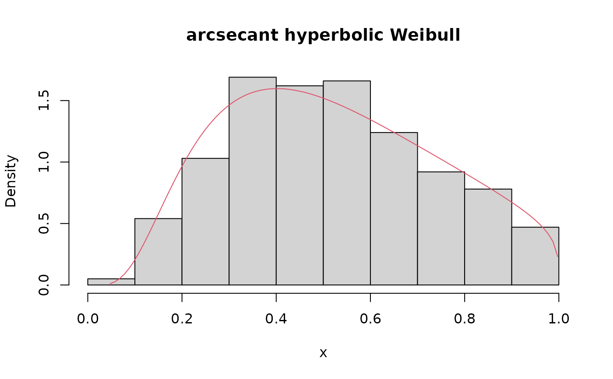
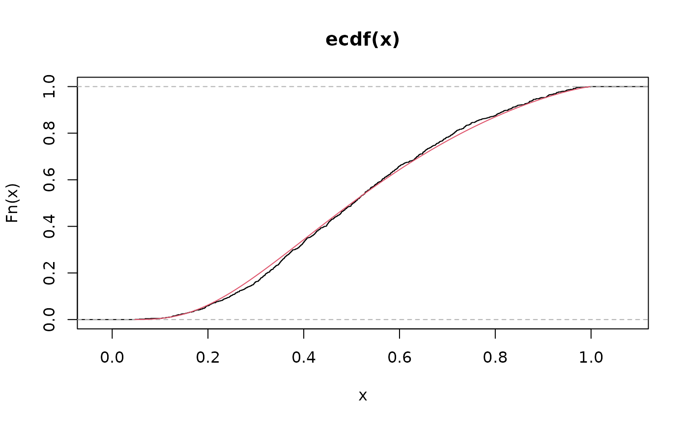
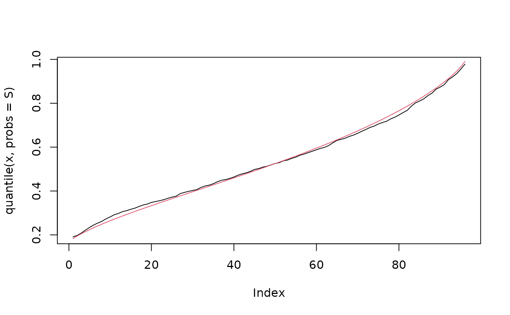

Density function, distribution function, quantile function and random number generation function for the arcsecant hyperbolic Weibull distribution reparametrized in terms of the \(\tau\)-th quantile, \(\tau \in (0, 1)\).
dashw(x, mu, theta, tau = 0.5, log = FALSE)
pashw(q, mu, theta, tau = 0.5, lower.tail = TRUE, log.p = FALSE)
qashw(p, mu, theta, tau = 0.5, lower.tail = TRUE, log.p = FALSE)
rashw(n, mu, theta, tau = 0.5)vector of positive quantiles.
location parameter indicating the \(\tau\)-th quantile, \(\tau \in (0, 1)\).
shape parameter.
the parameter to specify which quantile use in the parametrization.
logical; If TRUE, probabilities p are given as log(p).
logical; If TRUE, (default), \(P(X \leq x)\) are returned, otherwise \(P(X > x)\).
vector of probabilities.
number of observations. If length(n) > 1, the length is taken to be the number required.
dashw gives the density, pashw gives the distribution function,
qashw gives the quantile function and rashw generates random deviates.
Invalid arguments will return an error message.
Probability density function $$f(y;\alpha, \theta)=\frac{\alpha \theta}{y\sqrt{1-y^2}} \mathrm{arcsech}(y)^{\theta-1}\exp\left [ -\alpha \mathrm{arcsech}(y)^\theta \right ]$$
Cumulative distribution function $$F(y;\alpha, \theta)=\exp\left [ -\alpha \mathrm{arcsech}(y)^\theta \right ]$$
Quantile function $$Q(\tau;\alpha, \theta)= \mathrm{sech}\left \{ \left [ -\alpha^{-1} \log(\tau)\right ]^{\frac{1}{\theta}} \right \}$$
Reparameterization $$\alpha = g^{-1}(\mu) = -\frac{\log(\tau)}{\mathrm{arcsech}(\mu)^\theta}$$
where \(\theta >0\) is the shape parameter and \(\mathrm{arcsech}(y)= \log\left[\left( 1+\sqrt{1-y^2} \right)/y \right]\).
Korkmaz, M. C., Chesneau, C. and Korkmaz, Z. S., (2021). A new alternative quantile regression model for the bounded response with educational measurements applications of OECD countries. Journal of Applied Statistics, 1--25.
set.seed(6969)
x <- rashw(n = 1000, mu = 0.5, theta = 2.5, tau = 0.5)
R <- range(x)
S <- seq(from = R[1L], to = R[2L], by = 0.01)
hist(x, prob = TRUE, main = 'arcsecant hyperbolic Weibull')
lines(S, dashw(x = S, mu = 0.5, theta = 2.5, tau = 0.5), col = 2)

plot(ecdf(x))
lines(S, pashw(q = S, mu = 0.5, theta = 2.5, tau = 0.5), col = 2)

plot(quantile(x, probs = S), type = "l")
lines(qashw(p = S, mu = 0.5, theta = 2.5, tau = 0.5), col = 2)
